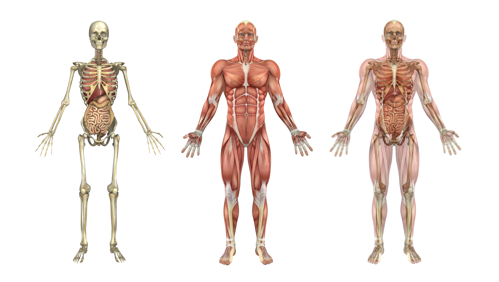
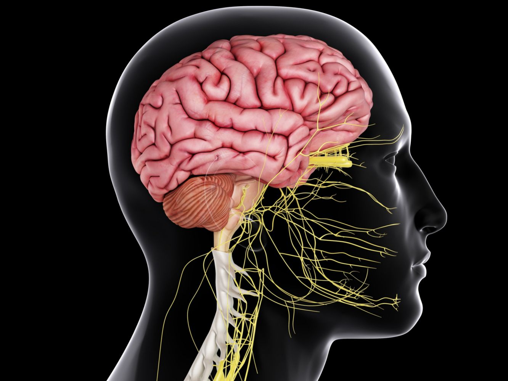

Select topic:

Bones and Muslces
Bones shape our body and help us to stand up straight. Muscles are attached to bones; they help us walk and run and smile. All the bones in our body make up our skeleton – from the top of our skull to the tips of the phalanges at the end of our toes. Muscles stretch....

Nervous System
Your nervous system is your body’s command center. Originating from your brain, it controls your movements, thoughts and automatic responses to the world around you. It also controls other body systems and processes, such as digestion, breathing and puberty. Diseases, accidents, toxins....